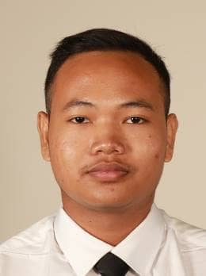

MUHAMAD HAIQAL BIN CHE' PIN

Professional Summary
I'm a third-year computer science student at Universiti Sains Malaysia, deeply passionate about full-stack development.
I possess a strong foundation in computer science principles and have honed my skills in a variety of programming languages, web technologies, and development tools.
My ability to seamlessly bridge front-end and back-end development,
coupled with my dedication to crafting user-centric and scalable solutions, makes me a valuable asset in delivering comprehensive
and end-to-end projects.
Education
- Bachelor (Hons) Computer Science - Universiti Sains Malaysia,Penang,Malaysia (2021-2025)
- Diploma in Information Technology (Digital Technology) - Politeknik Balik Pulau,Penang,Malaysia (2018-2021)
Work Experience
- IT Support - Northern Asia Resources
Feb 2021- Aug 2021
- Hardware and Software Troubleshooting: Diagnosing and troubleshooting hardware and software problems, including desktops, laptops, printers, and various software applications.
- User Support: Offering prompt and effective technical support to end-users, resolving hardware and software issues, and ensuring minimal downtime for employees.
- Installation and Upgrades: Deploying new hardware and software systems, conducting system upgrades, and ensuring seamless transitions for users.
- Documentation: Maintaining accurate records of support requests, troubleshooting steps, and resolutions, streamlining future support processes.
- Cashier - Restaurant Rimbun Ikan Bakar
Jan 2018 - June 2018
- Responsible to handle financial transaction
- Providing excellent customer service
Extra-Curricular Activities
2019 - Politeknik Balik Pulau
Ping-Pong Tournament
Chairman of Ping-Pong Club
- Planning and coordinate the tournament. This include setting the date, venue and format of the tournament as well as determining the tournament rules and regulation
- Collaborated with club members, volunteers and other stakeholders to ensure the program runs smooth
Others
About Me
Get In Touch